| Launching AMF and Escape models is easy. When an AMF file is selected -- in any of the perspectives -- the toolbar and Application menus are updated to reflect the file you've selected and provide convenient access to other functions. For example, when we click on a metaabm file in the package explorer, model execution buttons appear in the toolbar. |
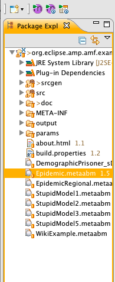
|
| If you right-click on a file a pop-up menu appears like the one to the far right -- in this case we're selecting the "Execute Headless" option. To launch a model, just select one of the options. (Note that the execution framework doesn't know whether your code exists in an Escape project or another target project. If you attempt to execute a .metaabm model in an Ascape project for example, you will get an error.) |
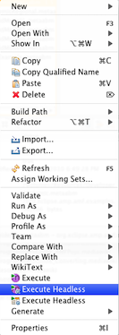
|
One a model has been launched, the Agent Execution Perspective automatically becomes active. The Provides a custom layout menus and tools specific to executing agent models.
The execution options are:
You can execute any Escape model directly from its Java file by right-clicking on it. This is used for models that have been written directly in Java, or that you have created or that have been automatically generated, such as the 3D versions of AMF models. In order for the model to launch correctly, it must have as a superclass the Escape "Scape" class. In the following screenshot, we've launched a 3D version of the Epidemic model. The 3D models are automatically generated for all .metaabm models. You can also launch a model into 3D by clicking on the model file and clicking the second (Execute Model with 3D) execute button.
Once a model has been launched, the toolbar buttons allow you to control model execution.
From right to left, you can start, restart, pause, step, stop and close a model. You can even run multiple models and control them independently. You can also move views around, close them and so on as with any other Eclipse views. Here we're running two separate models for comparison.
A special feature of the modeling tools is the "Speed Slider". This allows you to dynamically "speed up" and "slow down" the model execution. You can see where you've set the current speed in the status bar in the lower left hand corner of the environment.
Actually, you're not controlling the speed of model execution at all. Agent models are almost always constrained not by the time of model execution -- a typical model can execute many thousands of iterations a second -- but by the time it takes to draw visualizations. By updating the views less frequently we allow the model to run at full speed until the next visualization period. This gives the illusion that we're speeding up the model. When we slow the model down, we're inserting a wait period between each model iteration.
To increase model execution speed, move the slider to the right. Here we're only updating the model every 56 iterations.
To decrease speed, move the slider to the left. Here, we're pausing between each iteration for 1.65 seconds.
An important concept in the execution workbench is the "active model". The active model is the model that is controlled by the toolbar buttons. As discussed, the Escape environment supports more than one running model at any given time. The active model is the current "focused" or front-most model, there can be only one active model at any given time and whenever any models are running one of them will be active. To make a model become the active model, you simply select a view of that model or select the model in the model manager (see below). When a model is closed, another model is automatically activated.
There are many views specific to the Agent Execution environment that will enable you to explore and control running models.
If you want to find out more about an agent, show the properties view, and click on agent in the 2D view or any other views that support agent selection such as the tree view.
You can experiment with different parameters (settings) for models by then clicking on the model in the Model Manager or by selecting a general mode area such as the gray area enclosing the 2D view.
The Agent Navigator allows you to select agents from a tree view. The agent selection is coordinated across views so that for example when you select an agent in the navigator it is also selected in the 2D view. In the following screenshot you can see an agent selected in both views as well as the properties editor.
The 'Model Manager' allows you to examine and control the status of all running models. In the following screenshot, we've launched four separate models so that we can compare the typical model state at different periods.
The manager shows that two of the models are running and two are paused. By opening the model node, we can see the views that are currently being displayed. Note that we mean something different by "Views" in this context. Here "Views" are any thing that is monitoring the state of a running model. A view may not have a graphical component at all.
You can make any model the current active model by clicking on its node in this view.
The 'About this Model' view displays information about a (AMF or Java based) model if it has been provided by the developer. In order to appear in this dialog, create a file named "About[MyModel].html" where "MyModel" is the model's Scape Class Name (not the AMF model file name). The file should be placed in a "res" source folder in the model project directory in a parallel directory path to the root scape's Java class package. For example, an about file for a model defined by the scape "edu.brook.norms.Norms" should be placed at "res/edu/brook/norms/AboutNorms.html". The file should be an html fragment -- that is, without body and head tags -- and can include any valid html tags, including links.
The Agent Modeling Environment is designed to support many kinds of 2D or 3D visualization. AMP includes the following views for generated models. The Escape API supports a number of additional visualization to support Ascape models that aren't shown here. Look at the example org.ascape.escape.models.examples and org.ascape.escape.models.brook for examples of those.
The Graphic 2D view is the most common view way to work with an Agent Model and is automatically generated and displayed for executing models.
There are a number of view widgets in the upper-right hand corner that you can use to modify the view. You can:
The 3D views provide a three-dimensional representation of a running model. Currently they support 2D models only, which makes them 2 1/2 D views.
You can navigate and customize the model with the following controls:
From left to right, they are:
Turns on and off the interpolated (smooth) movement of agents from one cell to another. This is a unique feature of AMP and provides a very nice visualization, but it does slow down model execution. For very large models, you can switch it off -- visualization will be "jerky" but much quicker.
The three perspectives are used to control the camera location -- in other words the perspective from which the movie is being made. Note that if the camera is currently moving to a given perspective and you select a new perspective the camera may become confused! It is best to wait until the camera comes to a stop before choosing a different perspective. You can speed up camera movement by pausing the model temporarily.
Moves the point of view to overhead, giving a similar view as you have with the 2D view. Note that in many cases the 3D view is actually faster than the 2D view, so this is a good way to observe any kind of 2D model.
Graph views allow you to undestand the network relationships between various agents in the model. By default, a graph is creaed for all relationships, but you can customize that behavior programmatically. Graphs are also super-imposed on 2D models, as we can see in the following example running the EpidemicContact model.
Note that complex models can take a long time to visualize and we'll be looking for opportuntites to optimize performance further in the future. If you think the visualization is stuck it is likely that it is simply calculating the next visualization step -- wait a bit before canceling the model or closing it.
Graph views can be customized with the following controls:
From left to right, they are:
The layout buttons control how the nodes are placed within the graph. You can swithc between layout dynamically to gain insight into network relationships.
|
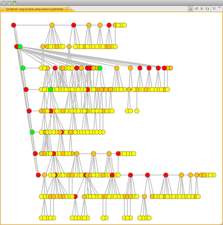
|
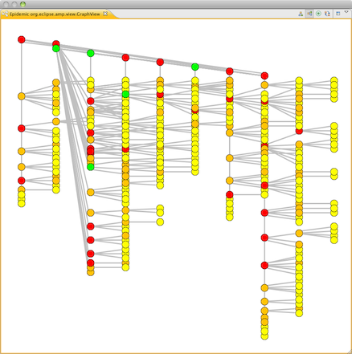
|
| Tree (Down): Places the graph nodes into a downward oriented tree formation. You'll find that the tree views are more effecient at visualizing, and can be very ood at representing models with an inherent hierarchical structure such as kinship diagrams, but don't always give the best insight into the model for complex network relations. | Tree (Right): The same tree layout oriented from the root-most nodes rightward. |
|
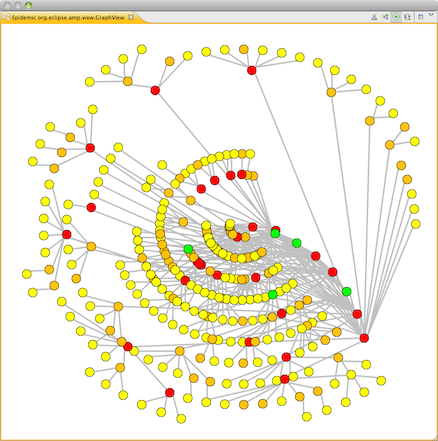
|
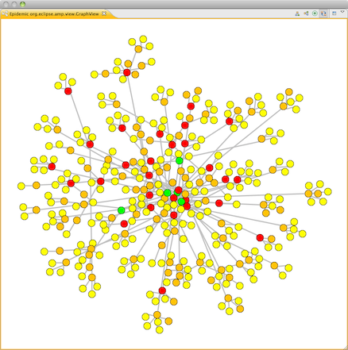
|
| Radial: Places the nodes in a radial layout with the root-most nodes at the center. This is a great way to represent semi-hierarchical models with complex structure, but is a little slower than the tree layouts. | Spring: This layout uses a spring and strain approach that allows nodes to find their own location within the visualization. It can provide beautiful and insightful diagrams, but it is also slower than the other layouts. For more complex models it often works well to use the radial layout and then switch to the Spring layout when examining relationships in depth. |
You can customize how the Spring by clicking on the customization button. This allows you to change a number of values that determine how nodes are layed out. While the default settings work well with many graph structures it can be helpful (and fun) to play with different settings to get the best visualization. |
A Chart view is automatically created and displayed for executing models. It can display aggregate values for any of the agent attributes you have set the "gather data" value to true for. Charts can be easily modified. While the built-in view is not meant to be the sole tool for Escape model data analysis, it provides an easy to use and powerful way to explore models interactively. The Chart view widgets allow you to modify the chart with the click of a button.
Several chart types are supported: The line, area, bar and pie chart. Click on one of the icons to select that type.
|
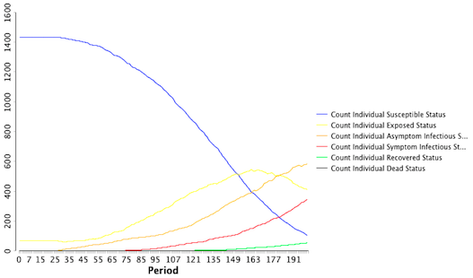
|
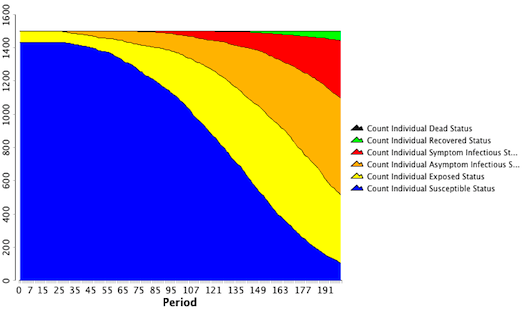
|
| Line | Area |
|
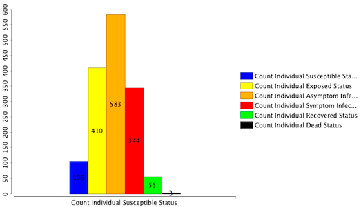
|
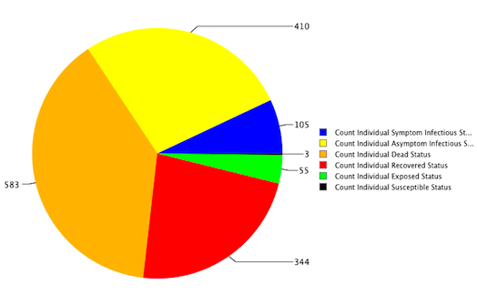
|
| Bar | Pie |
To select the statistics to display, show the Chart Customizer view. When the customizer has been selected, select a chart to customize. The customizer presents the possible choices in a 2D format. On one axis are the attributes that have data being collected, and on the other are the measurements collected on those axes, i.e. Count, Minimum, Maximum, Variance, Standard Deviation, Sum and Average. To clear all selections, click the Gray "X" button.
There are a number of other things to play around with, such as zooming the agent view or selecting other chart series to display using the Chart Customizer, so just explore. You can always close an active model by clicking on the close toolbar button. Or if you can't access the models controls for some reason, you can open the progress view and close projects form there.
To execute applications for other targets such as Ascape or Simphony, just right-click on the metaabm model, select Run As.. and pick the target you want to launch. In the example below, we're launching Ascape from within an ..ascape project.
The external tool you've selected will then open into a separate Java application.
Note: remember that the menu options are active regardless of whether the target is actually supported within a given project. If you attempt to Run (external targets) or Execute (internal targets) models from a project that does not support that target you will get an error!
Escape provides full support for parameterization of models. This allows you to create many sets of parameters for a given model, allowing you to decouple model runtime settings from the model itself. (Support for parameter sweeps is forthcoming.) To create a new parameterization, right-click in the location you want to create the parameter file, and select New > Parameters File.
In the wizard that follows, give your parameter file a name:
The edit the file. See below for file syntax. The parameter editor has built-in support for code-completion, syntax high-lighting and other editor features.
In the example below, we've created two separate parameter files for the epidemic model with different values for contact transmission probability.
As with other runnable files, you can launch a parameter file simply by selecting execute in the popup menu, application menu or toolbar.
Parameter files are quite simple. Every parameter file specifies the "model" that will be executed.The "incorporates" keyword supports including parameter values from other files. File locations are relative to the location of the parameter file, but it is usually more flexible to refer to model files relative to their project location. You can do that by inserting a "|" character at the beginning of the file name.
Attribute values are specified by the attribute ID (with the first character in upper-case) followed by "=" and the desired value.
We can create a base parameters file called "EpiBase.apar".
model "|Epidemic.metaabm"
StopPeriod=500
This means that we expect the Epidemic.metaabm model to be at the root of the project, and we want the model to stop at period 500. Then -- in this overly simple example -- we could create two other files, EpiHighTransmission.apar:
model "|Epidemic.metaabm"
incorporates "EpiBase.apar"
MinContactTransmissionProbability=0.05
MaxContactTransmissionProbability=0.2
and EpiLowTransmission.apar:
model "|Epidemic.metaabm"
incorporates "EpiBase.apar"
MinContactTransmissionProbability=0.0
MaxContactTransmissionProbability=0.15
Both of which reference the base set of parameters we've just defined and add run specific variables. Note that the incorporates reference is a parameter file relative reference so that we can easily move the set of parameter files to any location we want. With these two files defined we can click on both of them at once, select the Execute button and immediately compare the two values. (Not shown.)
One of the most important and over-looked aspects of modeling is verification. Very loosely speaking, model validation is the process of determining whether a model matches up to the "real world". Model verification is the process of determining whether your model specification matches up to the model you've actually implemented. In other words, does the model do what you say it does?
To help you answer this important question, the modeling tools include unique support for an approach to validation and verification called "unit testing". A thorough discussion is far beyond the scope of this manual, but this guide should give you enough information to get testing your own models. Testing might seem tedious ut its actually a real time saver, because you can quickly run a set of tests to ensure that you a new model change hasn't broken existing functionality. This peace of mind is priceless, and once you start testing, you won't know how you lived without it!
To create a new test, right-click at the location you want to put the test files. (Not shown.) Then we can edit the test file using the syntax shown below. It's helpful to keep them organized in sets of folders. To execute a test or set of tests, simply select the test files and click "Test Once" or "Test 5 times" to run a set of identical tests. The latter is useful for stochastic tests in which tests may create significantly different results for the same random seeds. (We'll provide more options in a future release.) If you select an entire folder, the framework will run all of the tests in the folder. This process is very similar to that for parameter files, so we won't show it here.
Once a test is complete, an "ares" file is created in the "test-results" folder. To see how your tests faired, open the .ares file. For the example test file below, we should see something like this:
Notice that we can view the expected values and where our results actually fall.
Test files are also pretty simple. It's a good idea to provide a description of the test so you can understand why you created it and what feature you're testing. Just put quote characters around your description. Then, use the "tests" keyword to specify what parameter file you'll be using. Again you can use file or project relative references. You don not specify a model here -- that's defined by the parameter file. You can use the "contains" keyword just like the incorporates keyword for parameter files, to specify a set of test constraints that you want to include with the new tests you've defined. This is useful for including a series of "sanity checks" with other tests. Then you specify the test constraints themselves. This uses the following form:
{Measure}({TestedAttribute}) = [{MinimumConstraint}, {MaximumConstraint}]
The measures available are Average, Minimum, Maximum Count and Sum. In order for an attribute to be tested the "gather data" value must be set for that attribute. All Measures are not appropriate for all attribute types. Booleans, Symbols and States should only use the Count measure as they represent discrete values that can either meet some condition or not.
The tested attributes are qualified by their model agent definition. The constraint definition is inclusive, as implied by the square brackets. Future implementations are expected to provide richer expressions and constraints but a very wide range of cases are supported by this construct, especially when combined with derived attributes. Tested Attributes are again specified by the attribute ID (with the first character in upper-case) followed by "=" and the desired value.
In the following simple example we want to make sure that an epidemic can't occur without disease transmission taking place. Here we're just looking to make sure that we have some very basic logic right. (This might be almost too simple for a real-world design, depending on how rigorous we want to be.) Note that some individuals are infected at the beginning of the model run so we need to account for that in our expected results. So first we have defined the EpiZeroTransmission.apar file like the other transmission rate parameterizations above except with these settings:
MinContactTransmissionProbability=0.0
MaxContactTransmissionProbability=0.0
Then we define our ZeroTransmission.atest file:
"Test that no disease transmission occurs with contact transmission set to 0."
tests "|params/EpiZeroTransmission.apar"
Count(Individual.Status=Dead) = [0,5]
Count(Individual.Status=Exposed) = [0,10]
Count(Individual.Status=SymptomInfectious)=[0,0]
Here we have a nice description, a reference to the parameterization we want to use, and then the set of constraints we will apply to them. After running this test, a test result file like the one above will be created and placed in our "test-results" directory.
| As discussed above, you can collect data for any model by selecting it or a paramters file and clicking the "Execute Model with data collection" button. If you use a parameters file setting the StopPeriod parameter will cause the model to stop executing and save the model at the specified time. Or you can stop the model manually. The model data will be collected into an "adata" file and stored in the "output" directory in your project. A new run entry will be created for each execution of a model. We are currently developing tools for exporting this data to various file formats as well as providing more seemless integration to sophisticated Eclipse hosted charting and report tools. You can use BIRT to interact with the data set using an XML schema data source and there is also an Ecore driver available. Model data can also be produced by writing custom views for data output. See the Ascape programmer guide for more information on how to do that. |
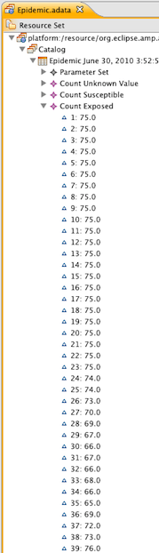
|